Desenvolvedora • Bradesco
Tecnologia aplicada à área de Finanças, com foco em Data Analytics, Business Intelligence e desenvolvimento de soluções para apoiar decisões estratégicas.
Desenvolvedora | Dados, BI e Sistemas
Sou Analista de Sistemas e Desenvolvedora, com experiência em sustentação, desenvolvimento de soluções, análise de dados e conteúdos educativos para quem está começando na tecnologia.
Transformo temas como SQL, Git, HTTP, HTML e POO em conteúdo prático para iniciantes.
Meu foco é mostrar onde cada conceito aparece no dia a dia de sistemas, dados e negócio.
Conteúdo educativo também revela clareza, documentação, empatia e raciocínio estruturado.
Sobre mim
Sou formada em Análise e Desenvolvimento de Sistemas e sigo em constante evolução por meio de cursos, prática e construção de soluções tecnológicas.
Antes da tecnologia, atuei na enfermagem, onde desenvolvi escuta, empatia, atenção aos detalhes e capacidade de resolver problemas sob pressão. Hoje aplico essa visão no desenvolvimento de sistemas, dados, indicadores e automações.
Também produzo conteúdos educativos sobre programação, dados e boas práticas, ajudando pessoas iniciantes a entenderem conceitos técnicos de forma simples e aplicável.
Experiência
Tecnologia aplicada à área de Finanças, com foco em Data Analytics, Business Intelligence e desenvolvimento de soluções para apoiar decisões estratégicas.
Sustentação e evolução de sistemas, com foco em estabilidade, performance, suporte a produção, deploys, testes e colaboração com equipes multidisciplinares.
Conteúdo educativo
Comandos essenciais, consultas e fundamentos para quem está começando.
4.395 reações • 454 compartilhamentosExplicação visual sobre campos de formulário e uso correto no frontend.
2.897 reações • 224 compartilhamentosUma jornada de transição, superação e construção de confiança na tecnologia.
4.098 reações • 161 comentáriosMateriais para organizar versionamento, histórico e mensagens de commit.
763 reações • 112 compartilhamentosLaboratório Tech
Esta área vai reunir ferramentas pequenas, úteis e bem acabadas, criadas a partir dos temas que mais ajudaram pessoas iniciantes.
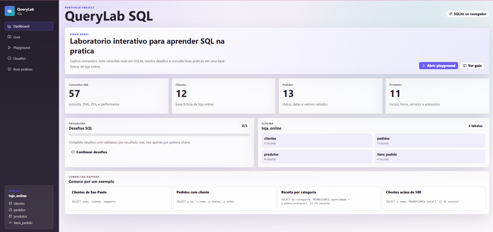
SQL • Projeto no arLaboratório interativo para praticar consultas SQL, visualizar comandos e aprender fundamentos com exemplos guiados.
Acessar projeto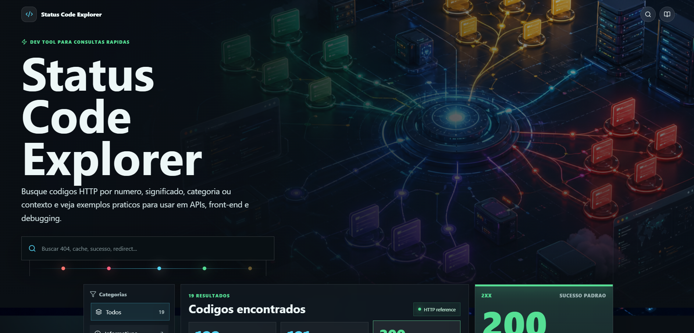
HTTP • Projeto no arBuscador de códigos HTTP com significado, categoria, exemplo e contexto de uso.
Acessar projeto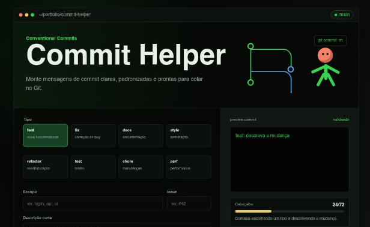
Git • Projeto no arFerramenta para montar mensagens de commit no padrão Conventional Commits.
Acessar projeto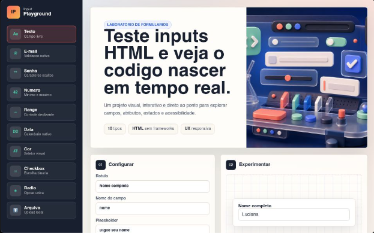
HTML • Projeto no arLaboratório para testar tipos de input e ver o código correspondente em tempo real.
Acessar projetoStack
HTML, CSS, JavaScript, TypeScript, Node.js, Python, Java, Flutter
SQL, MySQL, Power BI, Data Analytics, Data Visualization, KPIs
Git, GitHub, Git Flow, Docker, Docker Compose, Scrum, Kanban
Engenharia de prompt, IA generativa, automação, produtividade, Microsoft Azure e AWS
Certificados
Cursos e certificações que reforçam minha evolução em desenvolvimento, inteligência artificial, dados, cloud e boas práticas.
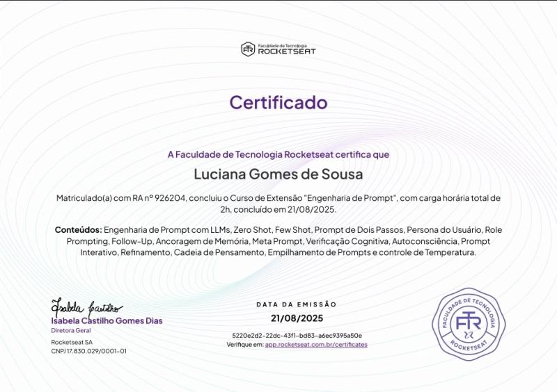
Certificado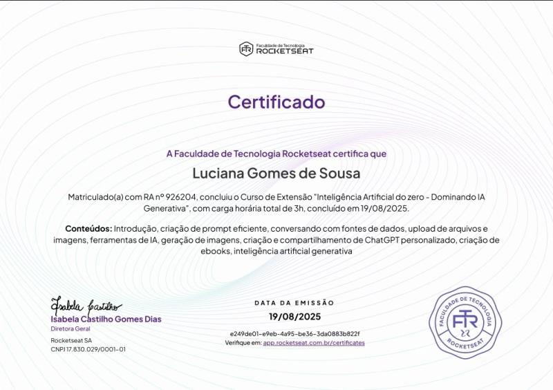
Certificado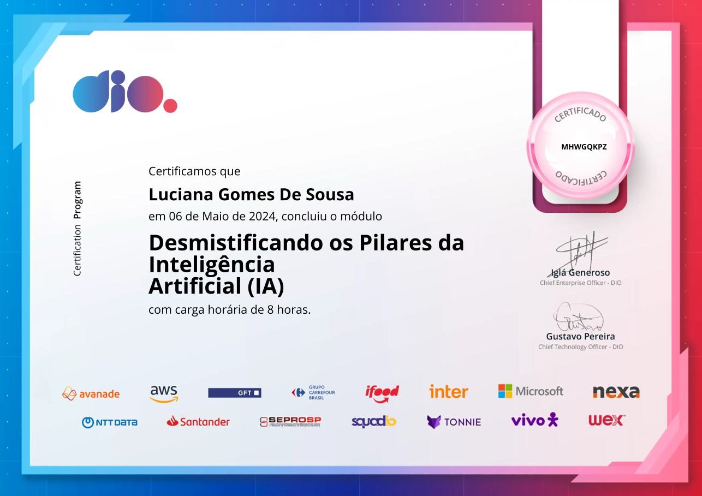
Certificado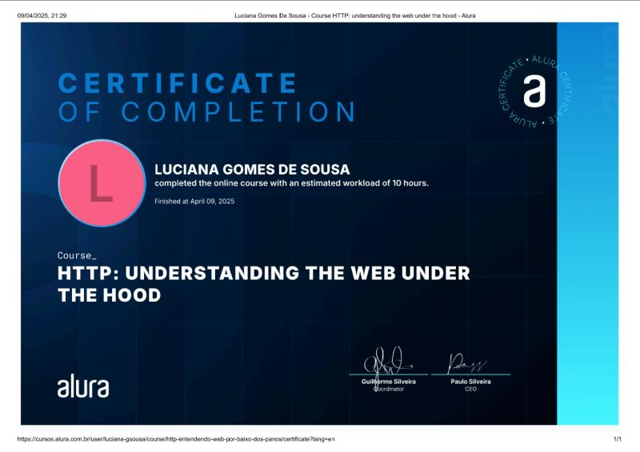
Certificado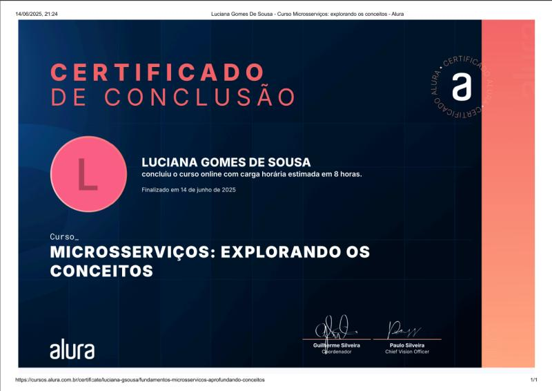
Certificado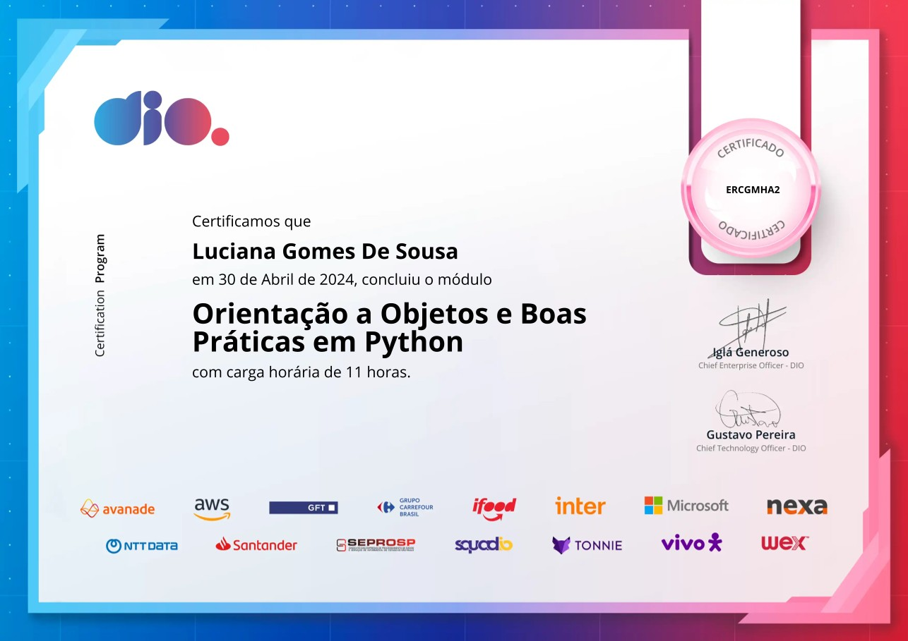
Certificado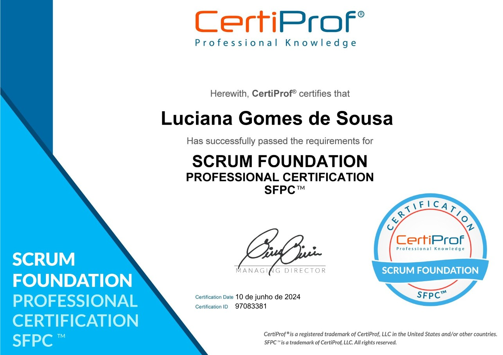
Certificado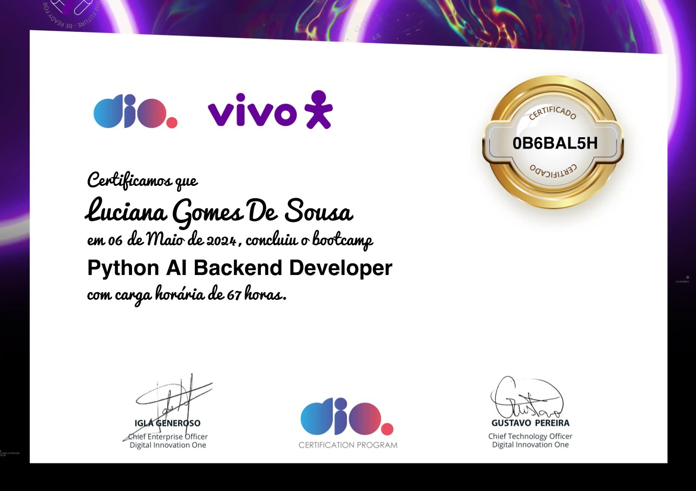
Certificado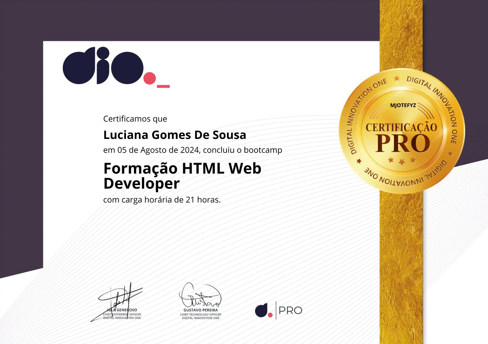
Certificado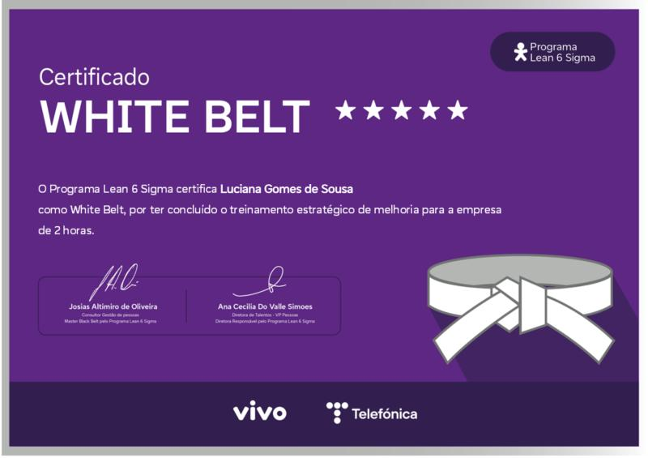
CertificadoContato
Estou aberta a conexões, oportunidades em desenvolvimento, dados, BI e projetos que unam tecnologia, clareza e impacto real.